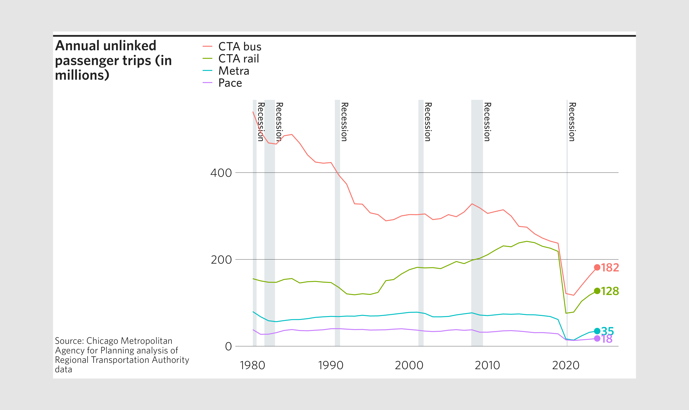
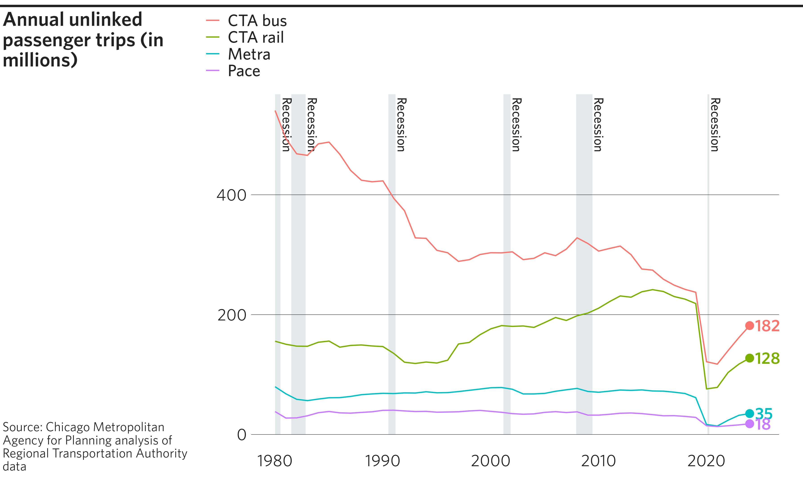
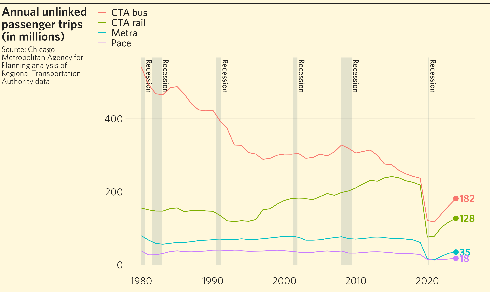
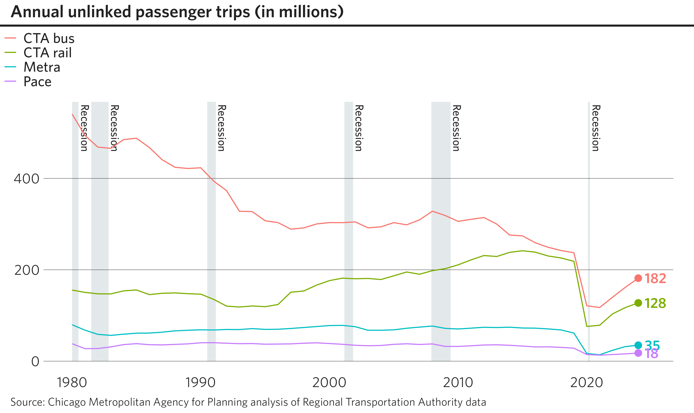
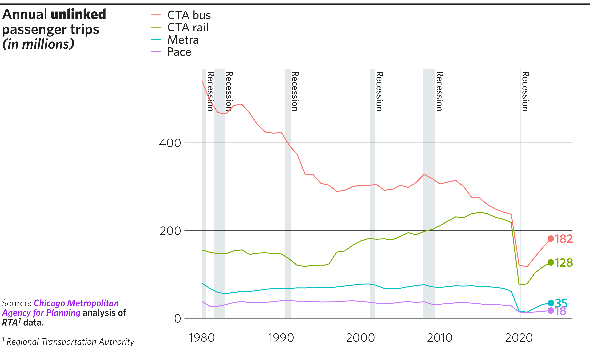
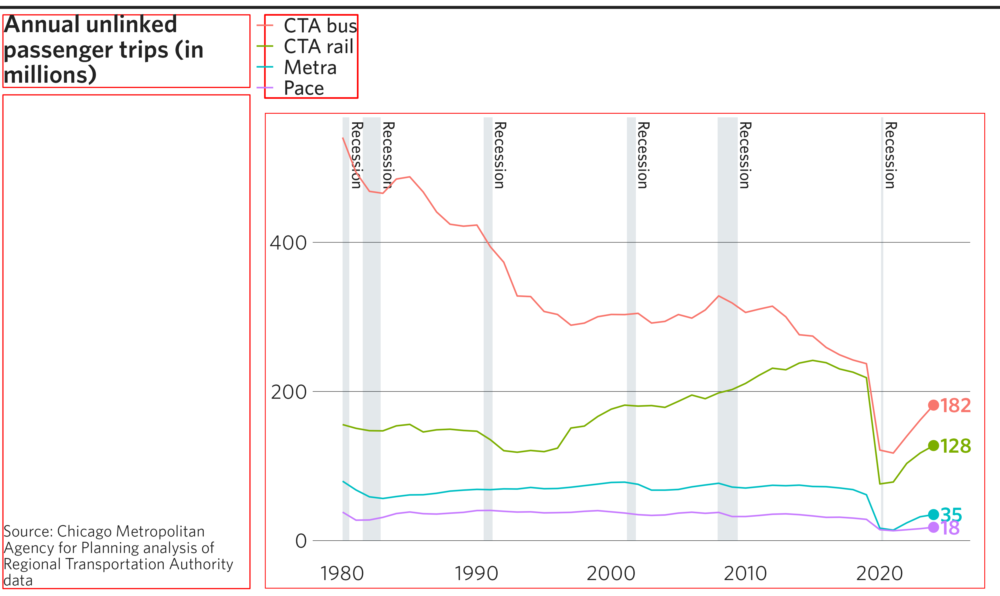
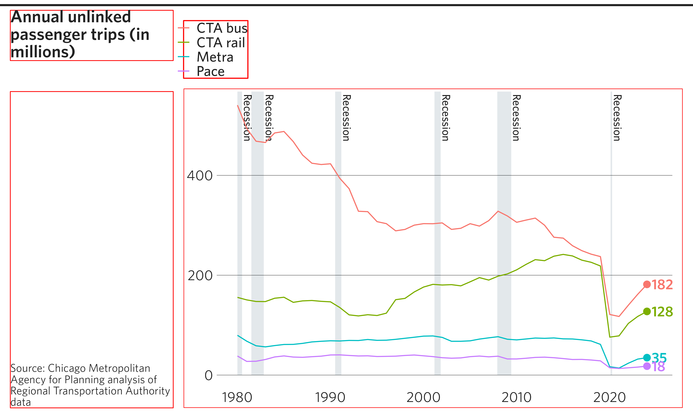
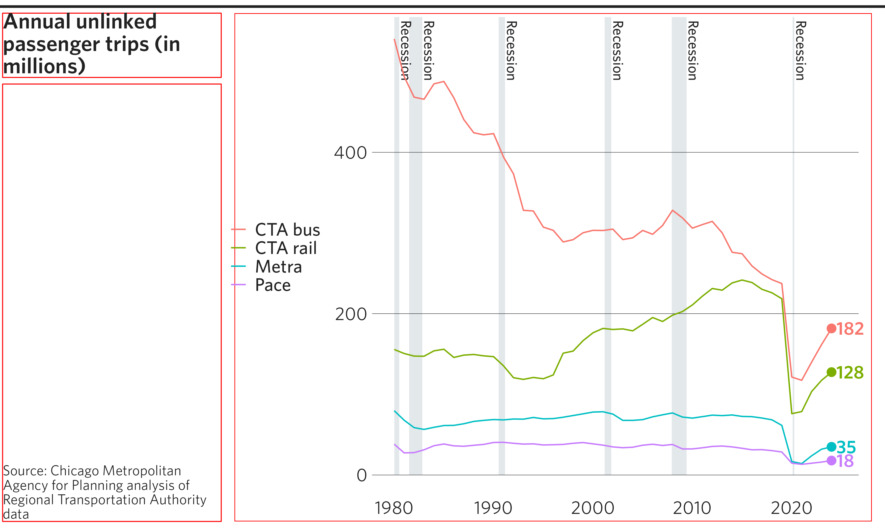

finalize_plot() will place a ggplot into a frame defined
by CMAP design standards. It will align your title and caption to the
left, add a horizontal line on top, and make other adjustments. It can
show you the final plot and/or export it as a raster or vector file.
This function will not apply CMAP design standards to the plot itself;
use theme_cmap() for that.
In this vignette we will use the final version of the line chart
developed in vignette("plots") to describe standard use of
the finalize_plot() function. That plot is referenced in
the following examples as p. The function has numerous
additional customization options built in, accepting 16 (or more)
arguments. Refer to the object documentation,
?finalize_plot, for detailed information on all
arguments.
Basic implementation
Finalizing a plot
After creating a plot and applying theme_cmap(), use
finalize_plot() to complete the implementation of CMAP
design standards. You will probably want to set at least the
title and caption, although the function will
extract them from the ggplot if they were specified.
As you are preparing the plot, you will likely want to view it within
R. Do this by leaving leaving the default mode = "plot" to
send the finished plot to the “Plots” tab within RStudio. The plot will
show up “actual size” (depending on your screen’s resolution) surrounded
by a gray canvas. If you want to view the plot in a separate window, you
can select the “Zoom” button at the top left of the plot. This may be
especially useful for large plots that cannot easily be displayed within
RStudio’s default plotting window.
finalize_plot(plot = p,
title = "Annual unlinked passenger trips (in millions)",
caption = "Source: Chicago Metropolitan Agency for Planning
analysis of Regional Transportation Authority data")
Exporting a plot
Once you are happy with your plot, export it using
finalize_plot() with one or more of the write modes
c("svg", "ps", "pdf", "png", "tiff", "jpeg") as well as the
filename argument. If Communications staff will be modifying your
graphic, they will require one of the vector formats (preferably PDF).
While many raster formats are available, PNG is strongly
recommended over the others for the best balance of filesize and visual
fidelity.
You may specify multiple modes simultaneously using the form
mode = c("png", "pdf", "plot"). That would export the plot
as both a PDF and PNG, as well as display it in the plotting window of
your R console.
Some additional notes:
If the full file path is not specified, the file will be exported to your current working directory (check with
getwd(), change withsetwd(dir)).If a file with the name specified already exists in the specified directory, it will not be overwritten unless the user sets
overwrite = TRUE.When naming your exports, you may but do not need to include the extension (e.g.,
filename = "my_chart"). The function will automatically add the appropriate extension to each of your exported files (e.g.,"my_chart.pdf","my_chart.png"). Leaving off the extension is recommended if you’re specifying multiple export modes in the same call.
# Finalize and export plot to PNG and PDF
finalize_plot(plot = p,
title = "Annual unlinked passenger trips (in millions)",
caption = "Source: Chicago Metropolitan Agency for Planning
analysis of Regional Transportation Authority data",
mode = c("png", "pdf"),
filename = "finalized_plot")
Basic customization
While finalize_plot() can be run successfully with very
few arguments, the function allows many further customizations, a number
of which are described here.
Top-level position adjustments
In addition to setting the plot’s height and
width, finalize_plot() has a number of
top-level arguments that impact the final layout. For example, you can
change the width of the sidebar, alter caption alignment, or change the
graphic’s background color. Changing the background color can be helpful
if you know that the graphic will eventually be placed on an inked
page.
# A modified finalized plot
finalize_plot(plot = p,
title = "Annual unlinked passenger trips (in millions)",
caption = "Source: Chicago Metropolitan Agency for Planning
analysis of Regional Transportation Authority data",
sidebar_width = 1.8,
caption_align = 1,
fill_bg = "cornsilk")
Finalizing a plot with no sidebar
One special case of a top-level position adjustment is removing the
sidebar altogether by setting sidebar_width = 0. This is
generally preferred when creating graphics to embed in a Word/PDF report
(as opposed to a web page or presentation slide). Titles and captions,
if specified, are moved to above and below the plot element,
respectively. Note that this has an impact on what margins are drawn
where. See the section Many, many
margins for more on this.
# A finalized line graph, with no sidebar
finalize_plot(plot = p,
title = "Annual unlinked passenger trips (in millions)",
caption = "Source: Chicago Metropolitan Agency for Planning
analysis of Regional Transportation Authority data",
sidebar_width = 0)
Title and caption formatting
The title and caption blocks take HTML formatting tags, which you can use to manually set line breaks and apply other font formatting.
# A finalized line graph, with text tweaks
finalize_plot(plot = p,
title = "Annual <b>unlinked</b> passenger trips<br><i>(in millions)</i>",
caption = 'Source: <b><span style="color: purple;"><i>Chicago
Metropolitan Agency for Planning</i></span> analysis of
<i>RTA<sup>1</sup></i> data.</b>
<br><br>
<i><sup>1</sup> Regional Transportation Authority</i>')
Advanced customization
Using debug mode to fine-tune your plot
finalize_plot() has a built-in visual debugging tool
that helps the user identify the positions of various elements of the
finished graphic and how they relate to one another. Setting
debug = TRUE will draw outlines around every rectangular
“grob” in the graphic:
# A debugged finalized plot
finalize_plot(plot = p,
title = "Annual unlinked passenger trips (in millions)",
caption = "Source: Chicago Metropolitan Agency for Planning
analysis of Regional Transportation Authority data",
debug = TRUE)
Overriding plotting constants
Default values in finalize_plot() attempt to reflect
CMAP design standards using constants. The list of preset values can be
accessed by calling get_cmapplot_globals(), while
individual presets can be accessed using
get_cmapplot_global(). Users can manually adjust these
constants by passing a named list to the overrides
argument. For example, the chart below uses overrides to
modify the margin below the title (margin_title_b), the
margin to the left of the sidebar (margin_sidebar_l), and
the margin above the legend (margin_legend_t).
The Many, many margins section of
this article describes most of these consts visually. To
learn more about all possible overrides, see
?set_cmapplot_global.
# A finalized plot with some formatting overrides
finalize_plot(plot = p,
title = "Annual unlinked passenger trips (in millions)",
caption = "Source: Chicago Metropolitan Agency for Planning
analysis of Regional Transportation Authority data",
debug = TRUE,
overrides = list(margin_title_b = 30,
margin_sidebar_l = 10,
margin_legend_t = 15))
Unshifting the legend
By default, finalize_plot() will attempt to extract
legend from the ggplot and draw it separately. This allows for
justifying the legend to the left edge of the plotting area
(ggplot2 only allows the legend to left-justify to the y
axis). If this attempted shift is unwanted or results in an error, the
legend alignment of the original plot can be kept by setting
legend_shift = FALSE. Note that in this situation, the
debug boxes indicate that finalize_plot() has not separated
the legend from the plot.
# A finalized plot with an un-modified legend
finalize_plot(plot = p,
title = "Annual unlinked passenger trips (in millions)",
caption = "Source: Chicago Metropolitan Agency for Planning
analysis of Regional Transportation Authority data",
debug = TRUE,
legend_shift = FALSE)
Many, many margins
There is a fairly long list of possible margins that can be
customized using the overrides argument of
finalize_plot(). You can read more about the available
options for customization in ?set_cmapplot_global.
Here, the margins are visualized as they impact a finalized plot that has a sidebar:

Here, the same margins are visualized as they impact a finalized plot with no sidebar: